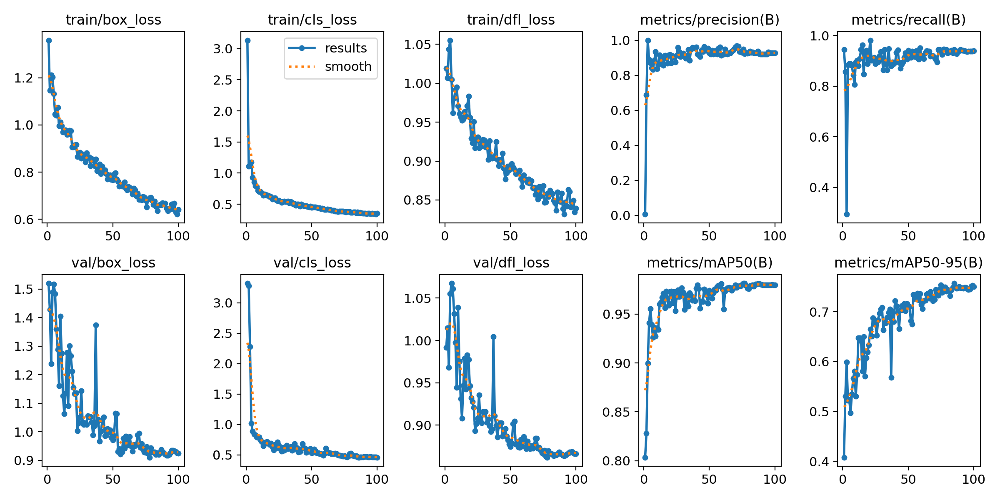
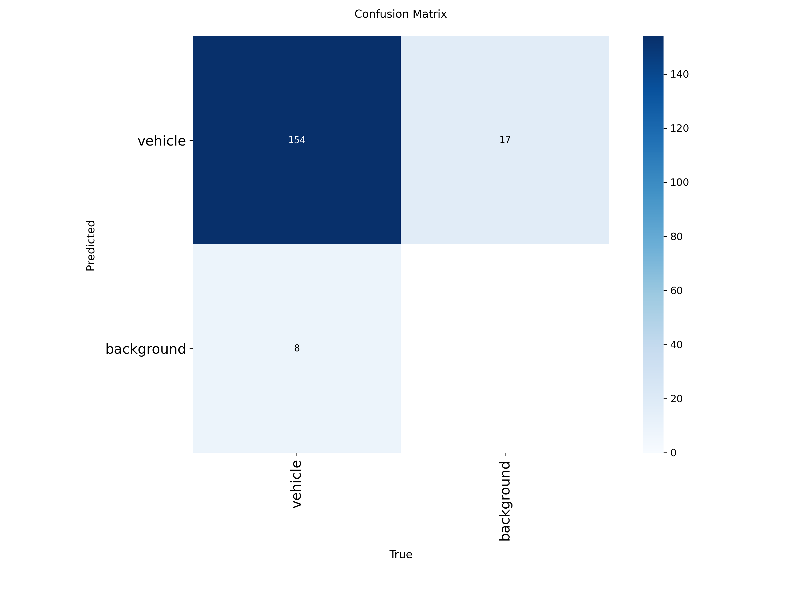
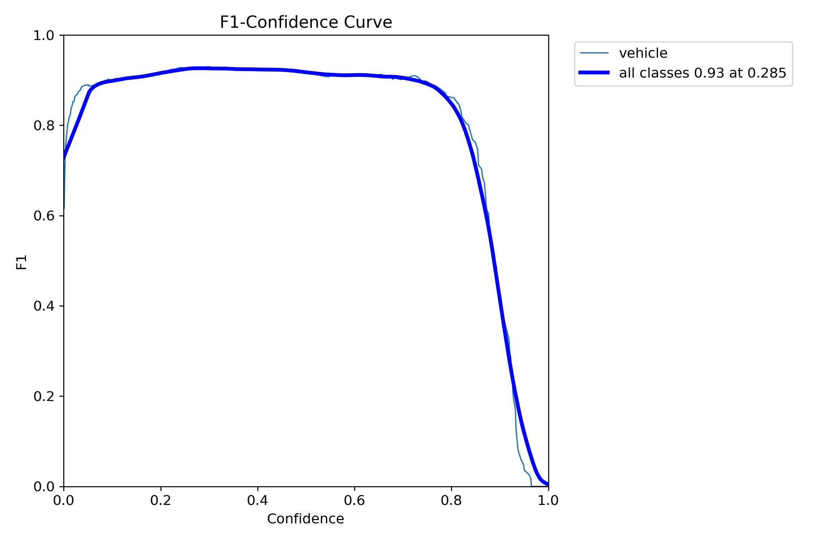
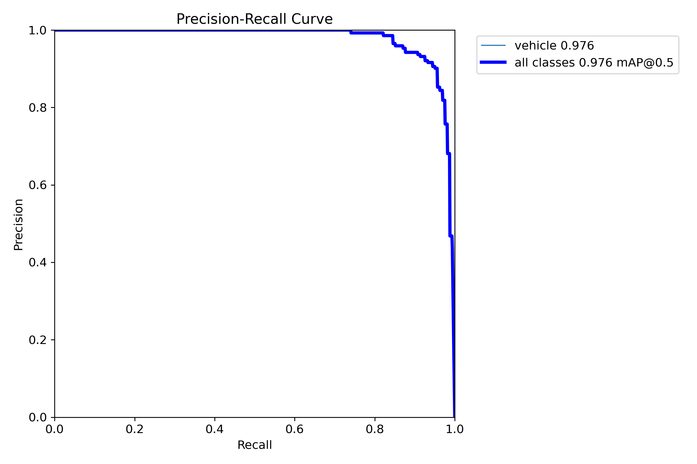
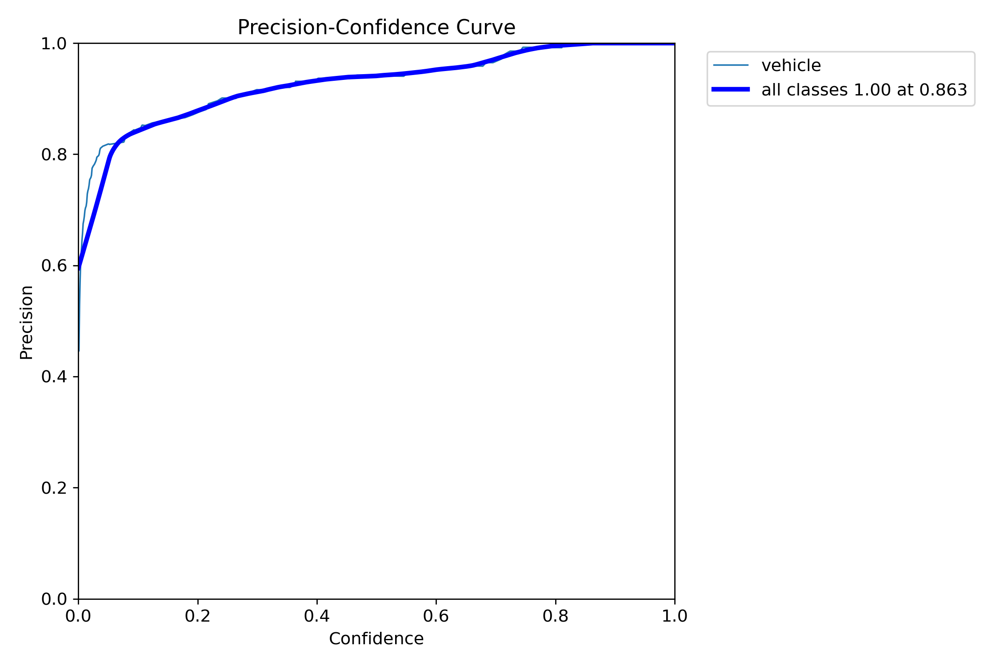
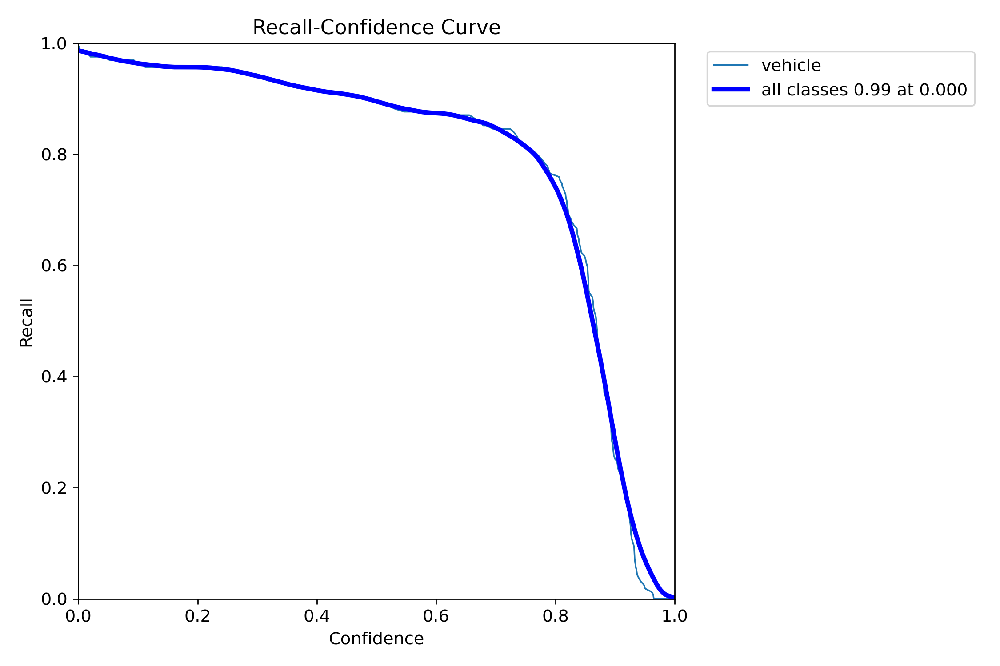
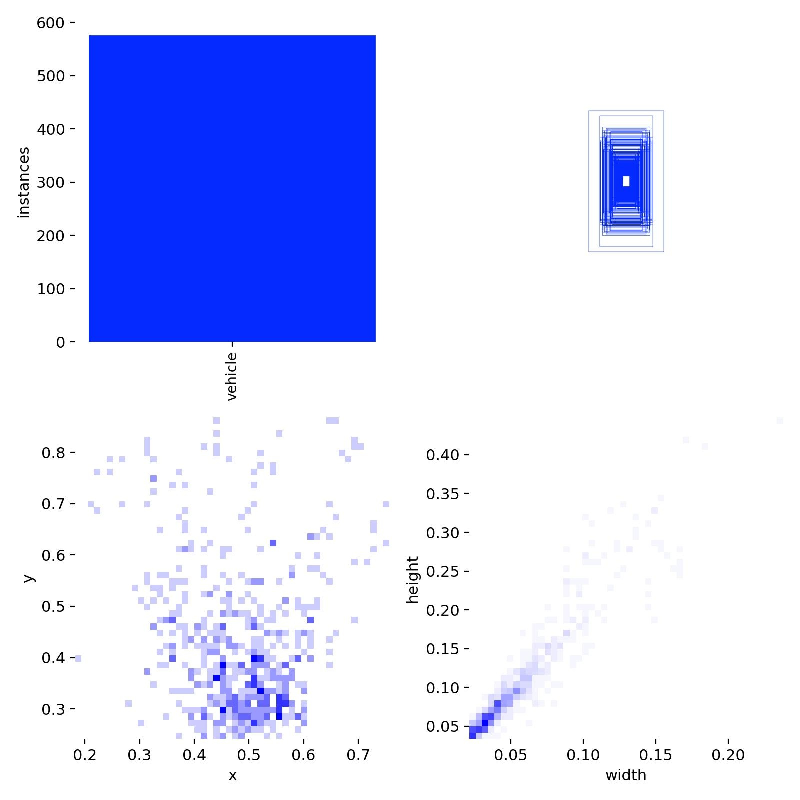
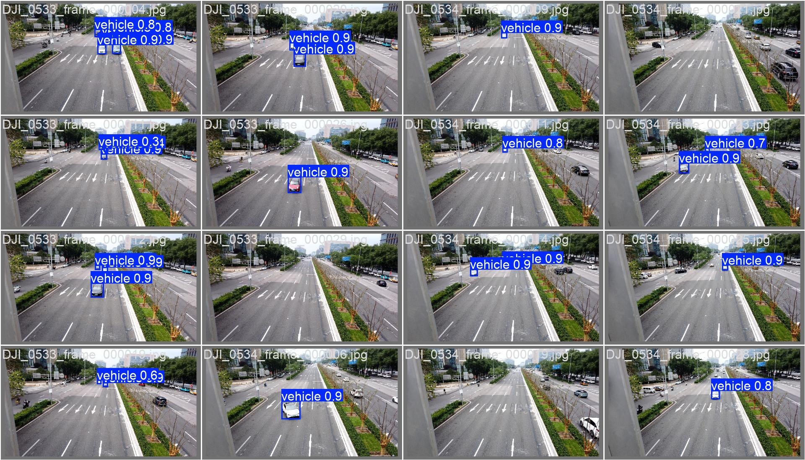
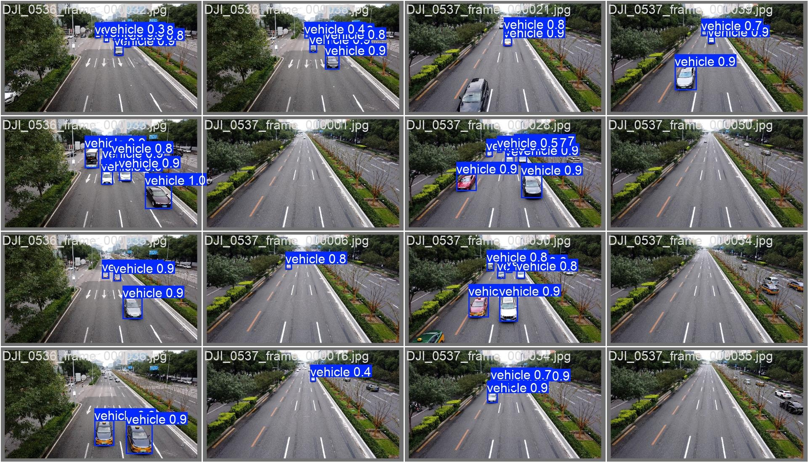
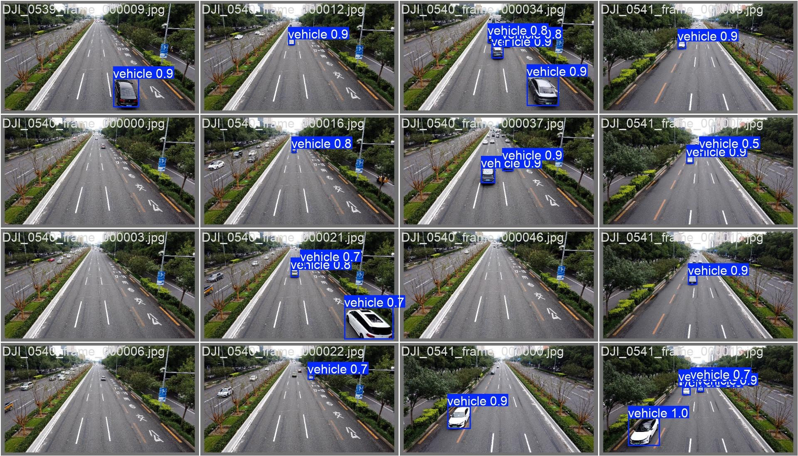

关键指标变化趋势：损失函数、精度、召回率、mAP等

模型分类错误分布：对角线越亮表示分类越准确

BoxF1_curve.png

BoxPR_curve.png

BoxP_curve.png

BoxR_curve.png

训练数据集中目标的位置、尺寸和类别分布

val_batch0_pred.jpg

val_batch1_pred.jpg

val_batch2_pred.jpg
| 指标 | 值 | 说明 |
|---|---|---|
| mAP50 | 0.9796 | IoU=0.5阈值下的平均精度，衡量检测准确性 |
| mAP50-95 | 0.7504 | IoU从0.5到0.95的平均精度，衡量定位精度 |
| Precision | 0.9269 | 预测为正例中实际为正例的比例 |
| Recall | 0.9392 | 实际为正例中被正确预测的比例 |
| F1 Score | 0.9330 | 精确率和召回率的调和平均 |
| Box Loss | 0.6404 | 边界框定位损失 |
| Cls Loss | 0.3526 | 分类损失 |
| DFL Loss | 0.8391 | 分布焦点损失 |
通用优化策略: